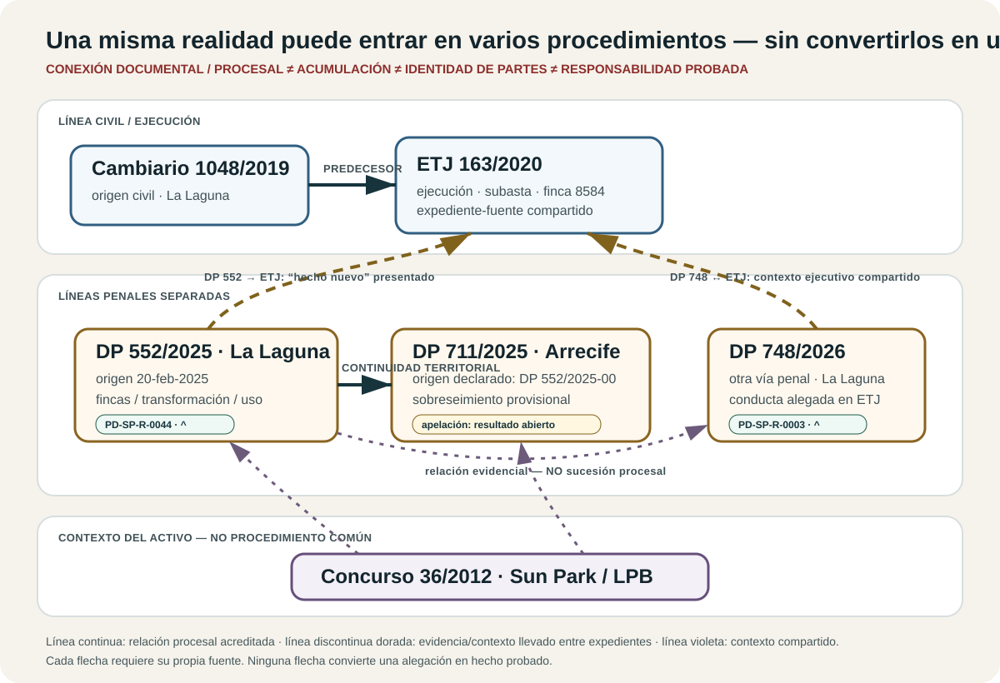

CANONICAL PROCEEDING · TF-CRI-011 · CAEPR PD-SP-R-0044
DP 552/2025 · Matkator · La Laguna
Origin file of the complaint submitted on 20 February 2025 concerning Matkator property within the former Sun Park complex. This public record separates what was alleged, what sources were supplied, and what each court later decided.
NIG 3802343220250001820
PD-SP-I-0044Date conflict preserved. The LexNET receipt for the enlargement is dated 6 March 2025; a later filing describes it as presented on 7 March. Both source literals remain until the certified docket resolves the discrepancy.
Visual relationship map

Boundary: a line means a source-backed procedural, documentary or contextual relationship. It does not mean joinder, identity of parties or transfer of conclusions between files.
Source-led digest
The complaint alleged that Matkator properties within Sun Park had been physically transformed and incorporated into MYND Yaiza without the authorisation the complainant considered necessary. The complaint’s own visual dossier particularly identified registry properties 8584 and 8588 and former units 507 and 511. Those physical mappings are party reconstructions requiring registry/cadastral and expert confirmation.
The March enlargement identified properties 8588 and 8584 by CRU, recorded additional registry discrepancies concerning 8498 and 8497, added named persons/entities to the allegations and requested evidence and protective measures. These remain attributed allegations, not judicial findings.
The connection to the civil enforcement is explicit in the record: a 13 March 2025 ETJ 163/2020 filing presented the DP 552 complaint/enlargement as a new fact, referring back to prior ETJ filings and asking the civil court to consider the physical identity, valuation and auction/nullity issues. That proves submission to the civil court, not acceptance of the allegations.
Controlled chronology
- 20 Feb 2025: initial complaint; 87-page primary source, with a public controlled extract of source pages 1–18.
- 6/7 Mar: enlargement; source-date conflict retained.
- 13 Mar: DP 552 material filed in ETJ 163/2020 as a new fact.
- 17 Mar: DP 711/2025 Arrecife order records DP 552 as origin and orders provisional dismissal.
- 4 Apr: personation order; dismissal maintained.
- 25 Sep: reform dismissed; appeal route stated.
- Oct 2025: appeal preparation/presentation is documented; appellate result remains unlocated.
Digitised corpus and gaps
2a31f072…e1e34c5; principal visual plates publicly indexed, remaining protected annexes retained privately.360ab767…f30e73e.e83d4794…e74af98.Controlled public PDFs are preserved in the working Library. This release puts their hashes, inventory and searchable public-safe representations into the repository; binary GitHub upload is tracked separately rather than misreported as complete.